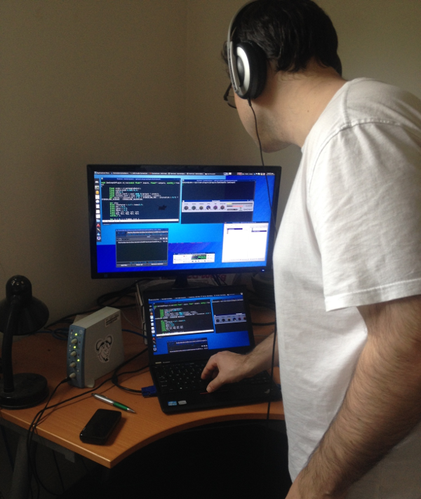

LMP Asks #5: An interview with Damien Zammit
This month we talked to Damien Zammit. As well as being the developer of zam-plugins, he has also contributed to the coreboot project, Calf studio plugins and Linux drivers for various audio interfaces. He maintains his own website over at ZamAudio.com.
Hi Damien, thank you for taking the time to do this interview. Where do you live, and what do you do for a living?
Hi, my name is Damien Zammit. I live in Melbourne, Australia. I am a freelancer with various technical abilities including computer programming and audio engineering.
Ideally I'd prefer to be known as a "Free/Libre software hacker". Hopefully I can still get hired with this title!
What is your musical background?
I started playing the piano as a child when I was almost 5 years old. We were lucky enough to have a piano teacher living next door to us as I was growing up. I was strongly encouraged to practice my scales many hours per day even though I didn't really enjoy that part so much. I am very thankful for this encouragement because playing music is now one of my passions and is much easier to pick up from a young age.
Music seems like a second language to me these days. I play mostly by ear now, but I can still read sheet music at a basic competency.
My favourite genres include Jazz, Latin, Classical and Rock.
I would like to continue extending my repertoire and possibly return to performance as I gain a lot of pleasure from this.
What is your history with Linux?
I grew up around computers, my uncle had a computer business and our cousins and I would often set up LAN parties on 486 computers with IPX networks in the late '90s. When I discovered that my NTFS partitions were getting corrupt and people were cracking into my dial-up internet at home due to bad security in Windows 98, I realised I needed to try something different.
My cousin encouraged me to try a version of "Linux" in the early new millenium, back in the days when Linux kernel was booted from a 3.5" floppy disk. I used Linux, Windows and OSX for a while.
In 2012 I discovered that the GNU project had done most of the work in making the Unix-like operating system and tools and that Linux was just the missing piece, the kernel. I watched a few videos from Richard Stallman's collection, in particular this one from 2009 where he spoke at a university about free software and the dangers of software patents. It was at this time that the penny dropped for me and that I realised I needed to help others free themselves from proprietary software when possible.
Considering how much work people have put into free software projects, it is astonishing to me that more of the public aren't aware of how useful and easy to use some of the most recent GNU/Linux distributions are. More people should be using it when presented with a choice of which operating system to use on their hardware.
Tell us a bit about what projects you are involved in and why you felt compelled to get involved
I currently contribute to the coreboot project, the calf studio plugins project and have developed my very own zam-plugins collection of audio plugins.
I have also submitted various mainline Linux kernel patches for sound hardware to enable new features or completely new support for peripherals.
I am glad to have been able to make a small bugfix to Ardour DAW recently. Kudos to those folks for making a great recording workstation!
I don't really feel compelled to get involved, I just love hacking in my spare time and collaborating with other developers over IRC.
You mentioned the coreboot project. What is it and why you did you want to work on the project?
I believe that being able to turn on your computer and choose to boot a free operating system is vital to everyone's computing freedom. Also, for people to know what parts of their hardware are being initialised can be critical to some people.
The only way to achieve this is to replace the firmware inside your mainboard with 100% free firmware. The coreboot project is one such project. I enjoy hacking on this in my spare time when I can, but reverse engineering hardware is very time consuming.
What languages and tools do you use for audio DSP programming?
Since I am interested in real-time signal processing, I use the C/C++ programming languages exclusively for this.
I recommend the LV2 plugin format for anyone interested in writing audio plugins with graphical user interfaces. Also the toolkit by falkTX called DISTRHO Plugin Framework (DPF) is one I find very useful for writing GUIs for plugins. JAPA is a very useful tool for checking plugin responses to various signals, and Robin's sisco.lv2 also.

For someone who would like to start audio DSP programming, what advice can you give?
I would suggest to visit the FAUST website and play around with the online signal processing to get a feel for DSP.
Also for complete beginners, it is essential to read some of the free online books on digital signal processing on J. O. Smith's website.
Tell us a bit about your hardware set up
I have a couple of old thinkpads that run coreboot, and an AMD desktop machine that also runs coreboot. I have almost completed a new coreboot port to a relatively up to date Intel sandybridge desktop mainboard, and hope to use it for my mobile recording box soon.
I like to use completely free software endorsed by the Free Software Foundation (FSF) when possible, but on my development machine I find that a Debian system with non-free packages enabled is easier to tinker with to improve the Free/Libre side of things.
What is your typical workflow when making music?
I like to use hardware more than software. A good measure for me is when I forget I am using a computer, rather I am playing my musical instrument.
I have built a mobile recording unit that includes an ADAT i/o PCI card and an RME Fireface 400. Basically I am getting optical audio directly into my PC. JACK runs flawlessly with this setup and I could technically record 24 ins simultaneously if I had all the converters and preamps, but I only use 12.
Why do you feel FLOSS is important, and what for you is the most important aspect of Linux audio?
When I saw the video of Richard Stallman explaining that students need the freedom to study source code to be good programmers, I couldn't agree more. Proprietary software is designed in such a way that hampers creativity and prevents an education in information technology. I feel sorry for all the children trying to learn about technology in a world where the underlying operating system of modern devices can be hidden from them. That means, I feel I must set a good example by only choosing to use devices and software that respect my freedom to control it. I try to encourage others to use software that is Free/Libre.
The most important aspect of Linux audio is to educate the masses that they don't need to buy a ~$5,000 recording system using proprietary software just to make good recordings, they can instead spend ~$300 and can do the same thing with Free/Libre software.
I'm not sure of FLOSS as a title. I prefer to refer to software that respects peoples freedoms as Free/Libre software. Freedoms as defined by the Free Software Foundation. Basically, the freedom to run, copy, modify and redistribute modified copies for any purpose and for any price, while perpetuating these freedoms to others who desire to use such software.
What do you feel is currently lacking in Linux audio?
I feel that the predominant problem of Linux audio is the lack of awareness that a music recording system based on 100% free software can rival the expensive studio setups. People just don't get it. The majority of musicians are not really interested in recording equipment, they just love to play music. But when they go to a studio to lay down some tracks, they are blinded with big expensive equipment and think that they could never do it themselves to the same quality.
I also feel that hardware compatibility is a big problem in Linux audio, as well as really high quality digital signal processing or DSP in the form of plugins. I enjoy incorporating good audio recording hardware with 100% free software. This involves tinkering with kernel drivers, trying to improve the hardware compatibility by reverse engineering and writing driver quirks for the devices. You should expect to see more of my patches getting into the Linux kernel hopefully.
What is your favourite FLOSS plugin?
I would have to say that Fons' zita-rev1 algorithm for producing artificial reverberation is by far my favourite addition to Free/Libre audio software. I have been trying to learn DSP for a few years now and I still don't fully understand how Fons made that.
My zam-plugins suite is missing a killer reverb, but I would not feel happy if I just cloned and rebranded Fons' plugin. This is why I have not included a reverb in zam-plugins, because I feel I am not able to offer the community a decent one of my own creation yet.
Have you attempted a reverb plugin?
I have not attempted a novel reverb plugin yet, it seems too difficult for me so far. I am content with Fons' stereo and ambisonic reverbs for the moment.
Are there any plugins that you feel Linux lacks?
I think more decent samplers and synths would be much appreciated by the GNU/Linux audio community. In particular, I had thought one time to design a free SFZ player for GNU/Linux but have not had the time to spend on this so far.
What changes, if any, would you like to see within the Linux Audio community?
I would like to see more users getting into the Linux Audio scene and finding ways to assist developers increase the hardware support for their chosen devices.
Also, I think we may need more user friendly interfaces that allow people to use more of the existing tools that are so easily available to them on the command line or in some existing GUIs.
What advice would you give to a new Linux Audio user?
I recommend looking on the ALSA page for supported sound hardware, or asking on Freenode if their hardware could be supported, and download a live distro such as AV Linux to try out your existing hardware and play with some of the amazing tools that are available for free. Do this before you fork out a lot of money on hardware. There are some pretty cool older devices supported and have decent preamps and converters.
I would say, your hardware choice in order of preference lowest to highest should be something like the following: Internal sound -> USB -> Firewire -> PCI/PCI-e.